Build a module
For each module: the panels in this repo, how it works, the front-panel hardware, and every known way to build it, with its PCB, schematic, BOM and Mouser parts.
| Module | Function | PCB sources | |
|---|---|---|---|
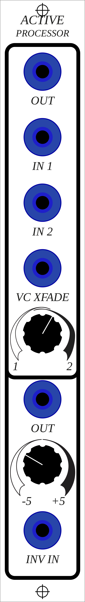 | Active Processor ACPR A voltage-controlled crossfader plus an inverting / offset stage, for audio or control voltages. | Utility / CV processing | Low-Gain |
 | Analog Shift Register ASR · CGS34 A three-stage bucket-brigade sample-and-hold: each clock pulse passes every held voltage on to the next output. | Sample & hold | Ken Stone (CGS)Prism Circuits |
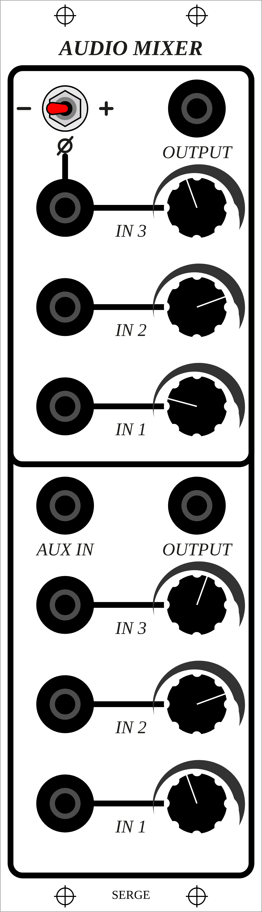 | Audio Mixer AMIX Two three-input audio mixers with level knobs, one with a phase-invert switch. | Mixer | Low-Gain |
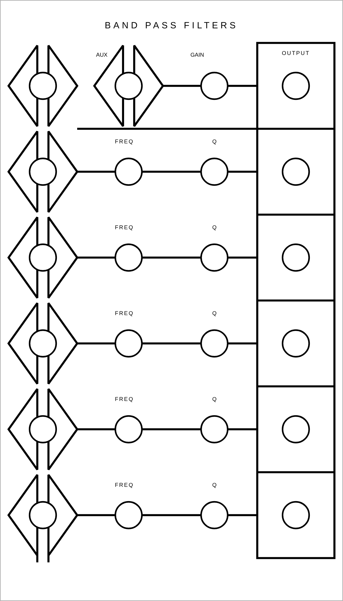 | Band Pass Filters CGS30 · CGS330 Manually tuned band-pass filters with frequency and Q knobs, for fixed resonances and formants. | Filter | Ken Stone (CGS) |
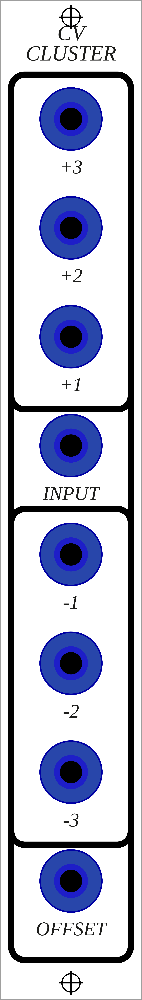 | CV Cluster CGS37 · CGS337 Makes a set of voltages around a base voltage: the base plus and minus a modulating voltage in equal steps. | Utility / CV processing | Ken Stone (CGS) |
 | Divide by N Comparator NCOM · ÷N COMP A comparator plus a voltage-controlled divider (1 to 31) with a staircase output. | Logic / divider | Low-Gain |
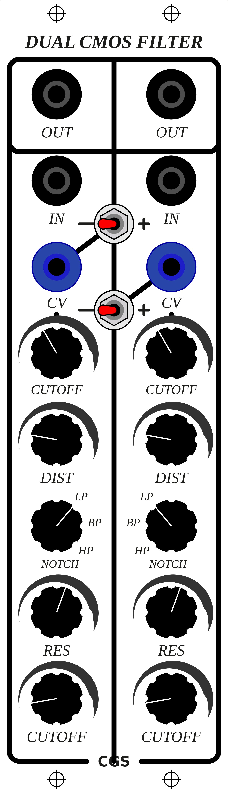 | Dual CMOS Filter CGS49 · Twin CMOS VCF · CGS749 Two filters built on CMOS inverters, after the EDP Wasp, with adjustable post-filter distortion. | Filter | Ken Stone (CGS) |
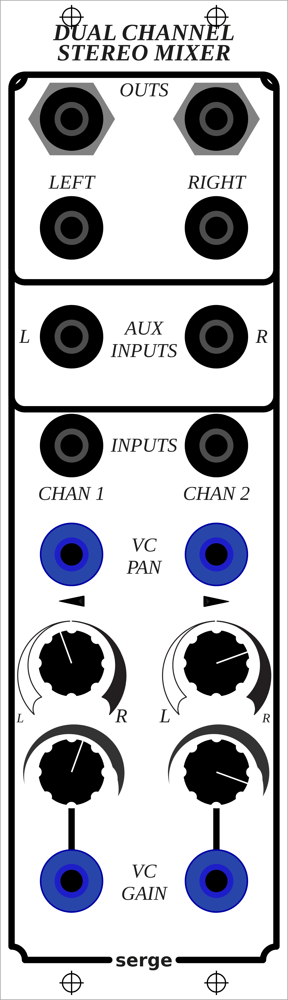 | Dual Channel Stereo Mixer DCSM · CGS101 Two voltage-controlled channels with equal-power panning onto a stereo bus, with aux inputs for chaining mixers. | Mixer / VCA | Ken Stone (CGS) |
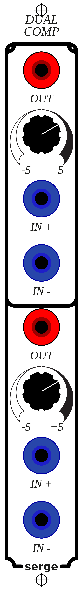 | Dual Comparator COM Two comparators with threshold knobs, for squaring signals, level detection and pulse-width modulation. | Logic / waveshaping | Low-Gain |
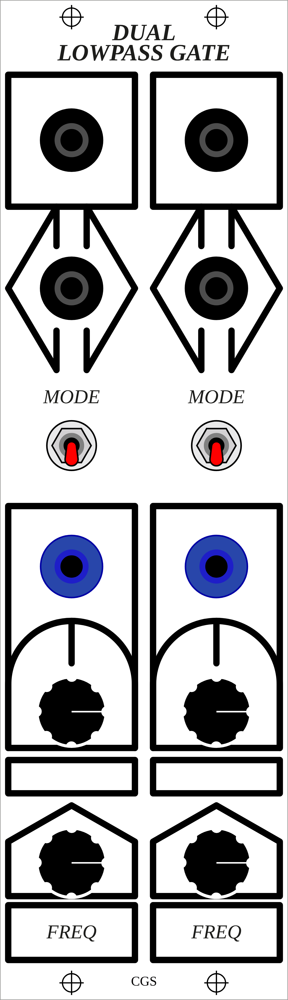 | Dual Low-Pass Gate LPG Two vactrol low-pass gates: a VCA and low-pass filter in one, for plucked, struck and decaying sounds. | VCA / filter | Prism Circuits |
 | Dual Mixer Mixer Two mixers, each with three level-controlled inputs and one unity-gain input. | Mixing | Low-GainPrism Circuits |
 | Dual Processor Processor Two circuits that add, scale and invert control voltages, each with three inputs and a manual offset. | CV processing / mixing | Ken Stone (CGS)Low-GainPrism Circuits |
| Dual Transient Generator DTG · Dual Rise/Fall Two slope generators with voltage-controlled rise and fall: envelopes, slew, LFOs and pulse delays in 2". | Envelopes / slope | Low-Gain | |
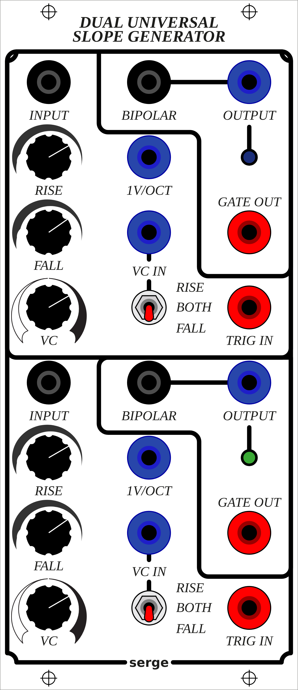 | Dual Universal Slope Generator DUSG · DSG · CGS114 Two identical slope generators, each of which can be a slew limiter, envelope, LFO, audio oscillator or pulse divider. | Modulation / envelopes / oscillators | Ken Stone (CGS)Low-Gain |
 | Dual VCA 2VCA Two exponential VCAs for patch-level gain control, with a steep cut-off near zero volts that suits envelopes. | VCA | Low-Gain |
 | Envelope Generator (1973) CGS76 · R7 '73 EG A rise-and-fall envelope that always completes its cycle, with a CYCLE input for looping. | Envelopes | Ken Stone (CGS)Low-GainPrism Circuits |
 | Extended ADSR CGS116 A voltage-controlled ADSR with an extra stage, keyboard tracking and a shape switch. | Envelopes | Ken Stone (CGS)Low-Gain |
 | Extended Range VCF / Variable Q VCF VCFQ · VCFX · CGS112 Serge's resonant voltage-controlled filter with low, high, band and notch outputs over a very wide range. | Filter | Ken Stone (CGS)Low-Gain |
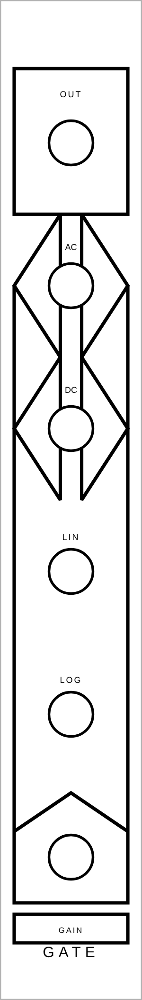 | Gate (1973) Paperface Gate · VCA An AC or DC coupled VCA with linear or log response. | Amplitude | Prism Circuits |
 | Gate Sequencer CGS89 A step sequencer of gates: each stage sends its pulse to a chosen output row. | Sequencing | Ken Stone (CGS)Low-Gain |
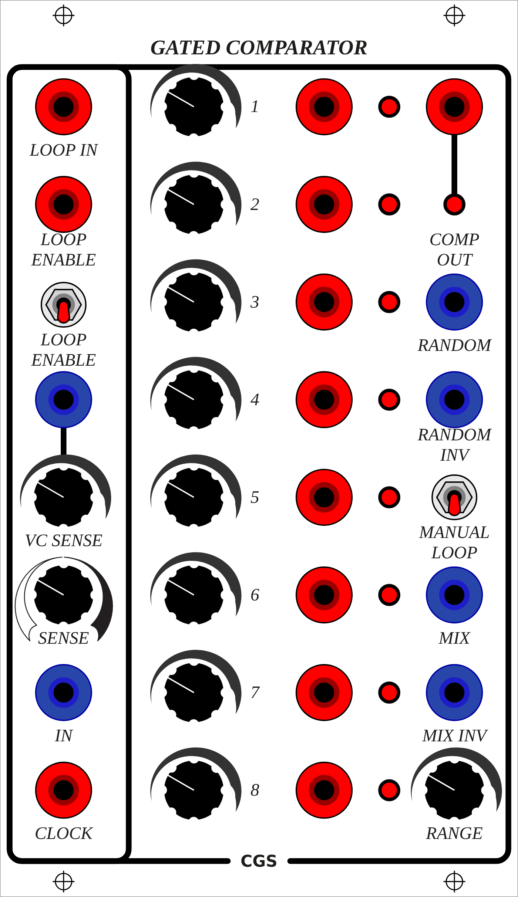 | Gated Comparator CGS13 · CGS313 A comparator clocked into an 8-stage shift register: semi-random or looping patterns of gates and stepped voltages. | Random / sequencer | Ken Stone (CGS) |
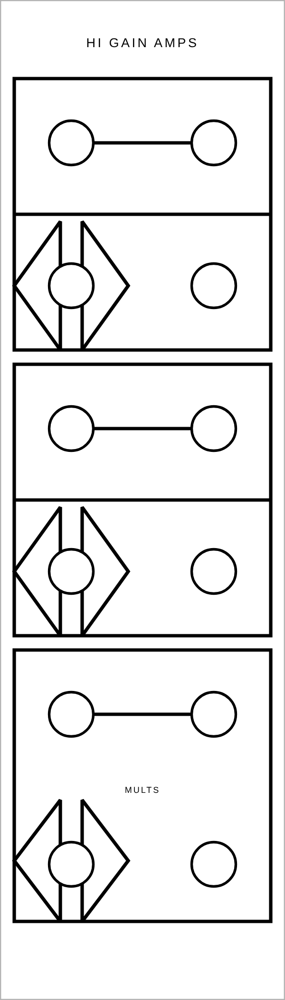 | Hi Gain Amps Preamp High-gain preamplifiers to bring microphones, pickups and other low-level sources up to synthesizer level, with multiples. | Interface / amplifier | Prism Circuits |
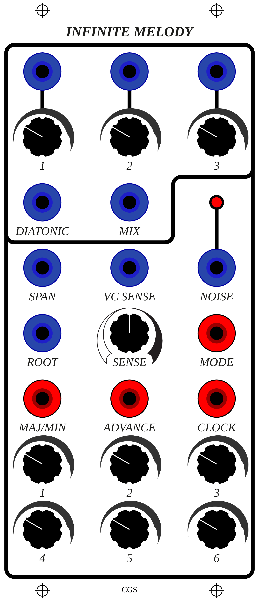 | Infinite Melody CGS32 Generates semi-random or themed stepped voltages, either purely random or weighted 1/f so small steps are common and big leaps rare. | Random / sequencer | Ken Stone (CGS) |
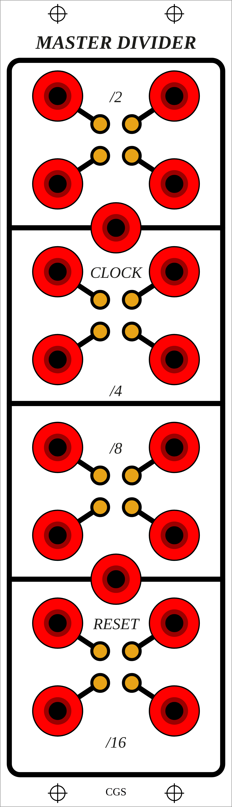 | Master Divider CGS22 · CGS322 Divides a master clock by 2, 4, 8 and 16, with outputs at 0, 90, 180 and 270 degrees of each. | Clock / divider | Ken Stone (CGS) |
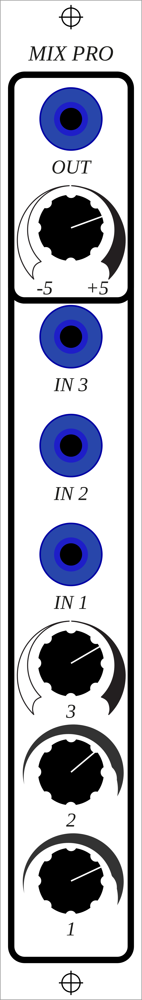 | Mix Pro Voltage Processor · LGE011 Three mixing inputs, one of them bipolar, summed with a -5 to +5 V offset: a compact processor for audio or control voltages. | Utility / CV processing | Low-Gain |
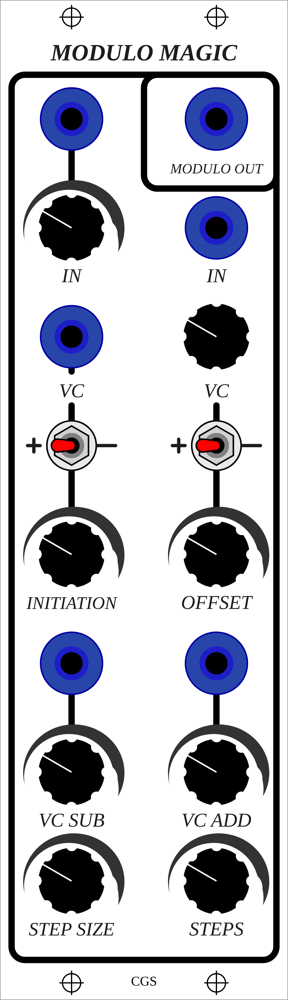 | Modulo Magic CGS40 · CGS340 Wraps a voltage back down each time it passes a step size: a CV processor and a wave multiplier based on the modulo principle. | Utility / waveshaping | Ken Stone (CGS) |
 | Negative Slew CGS82 Two sections that slew falling voltages, and with a little patching become voltage-controlled sawtooth oscillators. | Modulation / slew | Ken Stone (CGS)Low-GainPrism Circuits |
 | Noise Source Noise / Random · CGS97 White and pink noise plus a sample-and-hold source for random voltages, triggered by pulses or a push button. | Noise / random | Ken Stone (CGS)Prism Circuits |
 | Oscillator (1973) Paperface Oscillator The original paperface VCO: a sine-to-saw waveshaper under voltage control, two frequency inputs, hard sync and AC / DC outputs. | Oscillator | Ken Stone (CGS)Prism Circuits |
 | Peak & Trough Hills & Valleys · CGS84 Analog logic: the Peak side passes the highest of its inputs (analog OR), the Trough side the lowest (analog AND). | Logic / analog logic | Ken Stone (CGS)Low-GainPrism Circuits |
 | Positive Slew CGS83 Two sections that slew rising voltages, or run as upward-ramp LFOs when their pulse is fed back. | Modulation / slew | Ken Stone (CGS)Low-GainPrism Circuits |
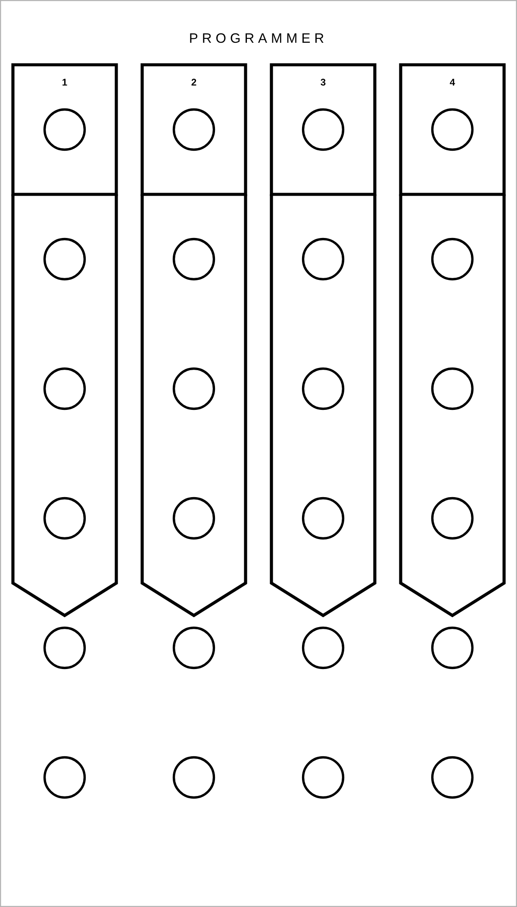 | Programmer (paperface) Paperface Programmer A stored-voltage programmer: each stage holds three knob voltages and is chosen by a pulse or its button, with as many stages as you link. | Sequencer | Prism Circuits |
 | Programmer Sequencer Sequencing Programmer · CGS87 A random-access voltage programmer: each stage holds a row of preset voltages and can be selected by pulse, button or up/down stepping. | Sequencer | Ken Stone (CGS)Low-Gain |
 | Pulse Divider & Boolean Logic Boolean Logic · Pulse Divider · CGS36 A pulse divider (2 to 8) and a set of logic gates (AND, OR, XOR, inverters) for gates, clocks and rhythms. | Logic / divider | Ken Stone (CGS)Low-Gain |
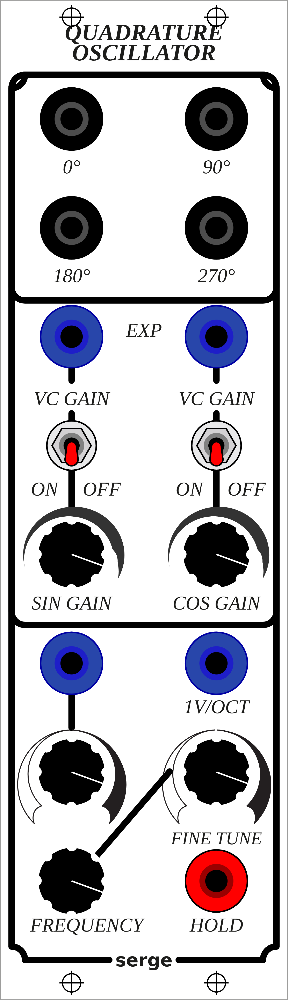 | Quadrature Oscillator Sine / Cosine Oscillator · CGS414 A sine oscillator with outputs at 0, 90, 180 and 270 degrees and a VCA on each of the sine and cosine outputs. | Oscillator | Elby Designs |
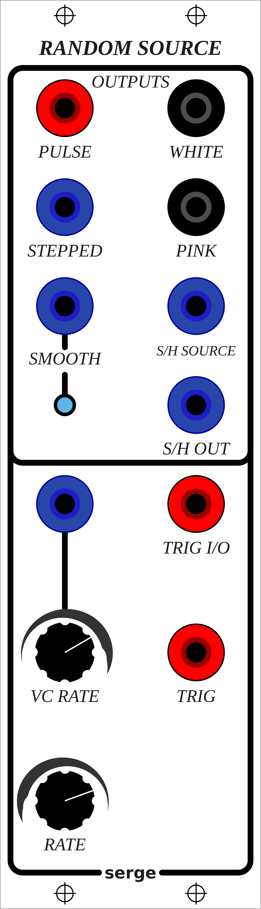 | Random Source RSG · Random Source Generator · LGE009 White and pink noise, smooth and stepped random voltages, random pulses and a sample-and-hold, with a voltage-controlled rate. | Random / noise | Low-Gain |
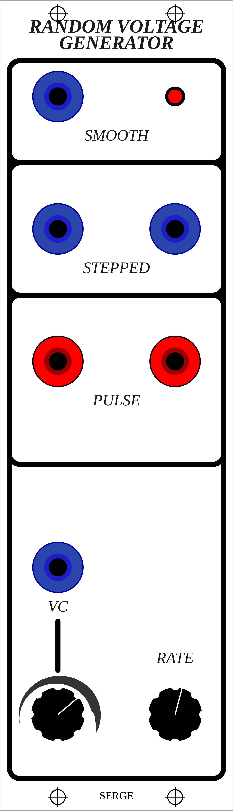 | Random Voltage Generator RVG Random voltages that change smoothly or in steps, plus random timing pulses, all at a voltage-controlled rate. | Random / noise | Prism Circuits |
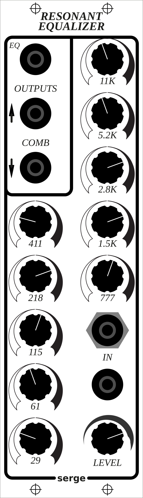 | Resonant Equalizer RES EQ · Fixed Resonant Filterbank · CGS202 A ten-band fixed filter bank whose bands can boost, cut or ring, with two comb outputs carrying alternate bands. | Filter / EQ | Ken Stone (CGS)Low-Gain |
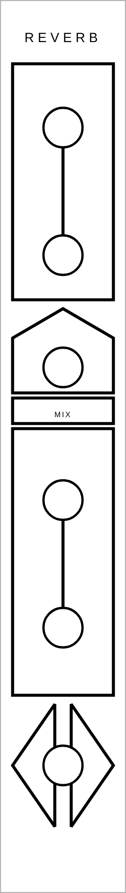 | Reverb Spring Reverb A reverb with a pure reverb output and a mix output, for space, ambience and timbre. | Effect | Ken Stone (CGS)Prism Circuits |
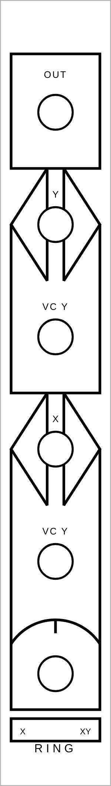 | Ring Modulator Ring · CGS79 An AC or DC coupled ring modulator with voltage control that moves between full ring modulation and amplitude modulation. | Modulation | Ken Stone (CGS)Low-GainPrism Circuits |
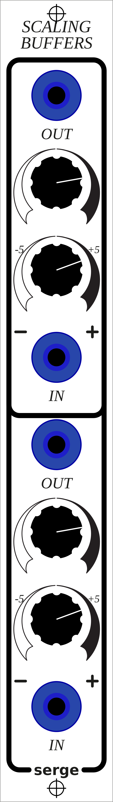 | Scaling Buffers BUFF · LGE023 Two unity-gain buffers, each with a bipolar attenuator and a -5 to +5 V offset, for steering several modules from one voltage. | Utility / CV processing | Low-Gain |
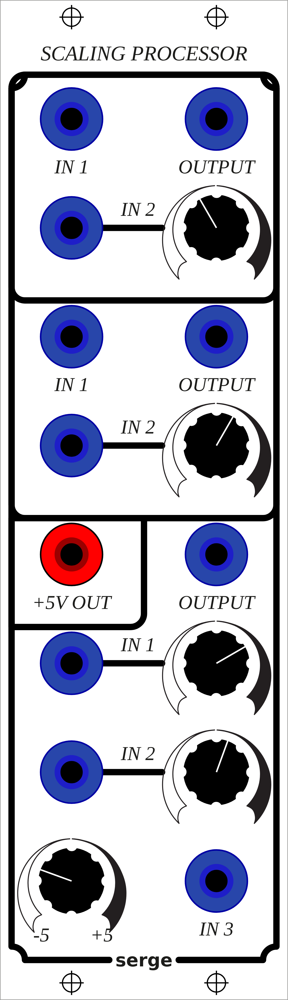 | Scaling Processor CV Processor Three voltage processors with attenuverters, an offset and a +5 V source. | Utility / CV processing | Low-Gain |
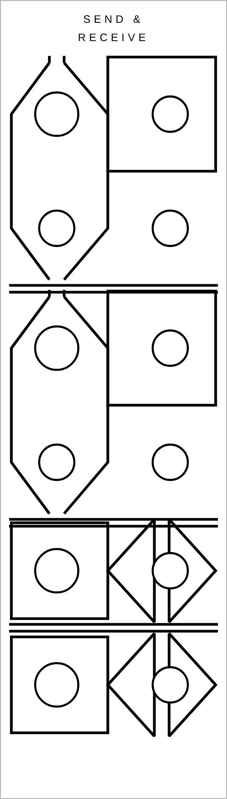 | Send & Receive Send Receive An effects send and return: patch banana signals out to 1/4" or 3.5 mm gear and bring the result back. | Interface | Prism Circuits |
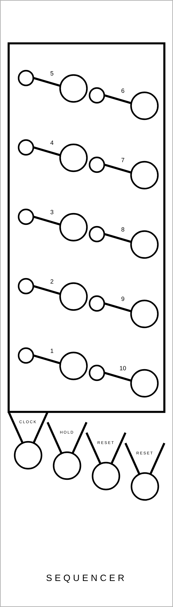 | Sequencer (Ten-Stage Pulse Sequencer) Sequencer · Ten-Stage Pulse Sequencer A ten-stage pulse sequencer with CLOCK, RESET and HOLD inputs and a pulse output per stage. | Sequencing | Prism Circuits |
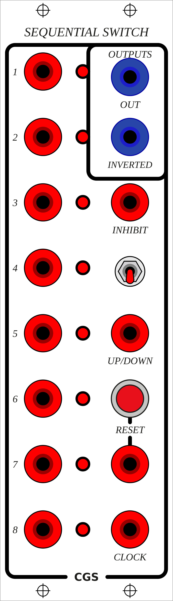 | Sequential Switch CGS28 · CGS328 Steps a common input or output through a set of positions on each clock pulse, for switching between sources or building simple sequences. | Switch / sequencer | Ken Stone (CGS)Low-GainPrism Circuits |
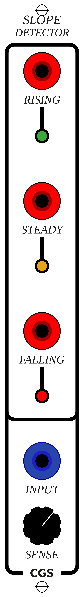 | Slope Detector CGS62 · CGS362 Watches a control voltage and gives a gate while it rises, while it falls, or while it holds steady. | Logic / CV processing | Ken Stone (CGS) |
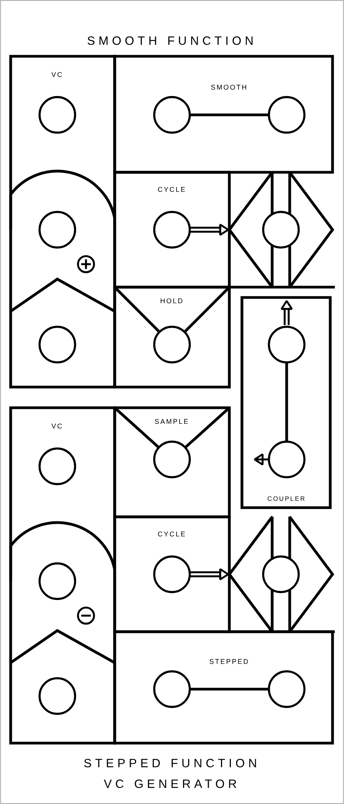 | Smooth & Stepped Generator SSG · Smooth Function / Stepped Function VC Generator · CGS92 A Smooth (slew) section and a Stepped (track-and-hold) section that couple together for random voltages, portamento and oscillators. | Modulation / sample & hold | Ken Stone (CGS)Low-GainPrism Circuits |
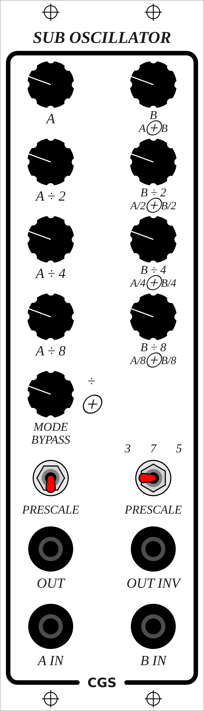 | Sub Oscillator CGS01 · Harmonic Sequencer A two-channel sub-oscillator: divides a VCO by 2, 4 and 8 (and 3, 5 or 7) for fat bass, harmonies or pattern sequences. | Oscillator / divider | Ken Stone (CGS) |
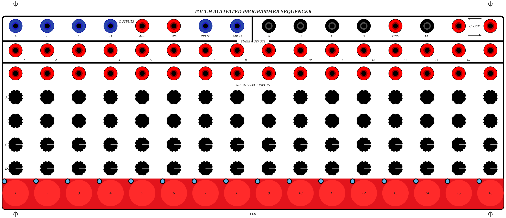 | Touch Activated Keyboard Sequencer TKB · Touch Activated Programmer Sequencer Sixteen capacitive touch plates that play as a keyboard or step through as a sequencer, each stage holding four rows of voltages. | Controller / sequencer | Prism Circuits |
 | Tri-Core VCO Triangle-Core VCO · LGE130 A stable triangle-core VCO with sine, triangle and pulse outputs, exponential and linear FM, PWM, sync and a VCO / LFO range switch. | Oscillator | Low-Gain |
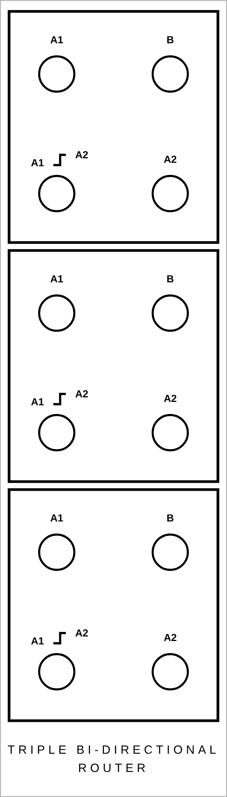 | Triple Bi-Directional Router Router · CGS88 Three switches that send one input to either of two outputs, or pick one of two inputs, under pulse or voltage control. | Switching / routing | Ken Stone (CGS)Low-GainPrism Circuits |
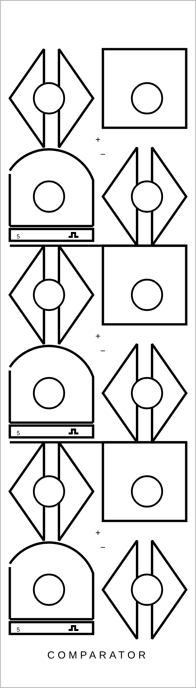 | Triple Comparator Comparator · CGS96 Three comparators for squaring signals, variable-width pulses, level detection and amplitude-based logic. | Logic / waveshaping | Ken Stone (CGS)Prism Circuits |
 | Triple Wave Shaper TWS · CGS85 Three non-linear waveshapers that turn a sawtooth into a sine and, chained, fold waves into richer shapes. | Timbre / waveshaping | Ken Stone (CGS)Low-GainPrism Circuits |
 | Universal Audio Processor UAP · LGE208 Two VCAs with an equal-power control circuit, switchable between a dual VCA, a stereo panner and a voltage-controlled crossfader. | Amplitude / mixing / stereo | Ken Stone (CGS)Low-Gain |
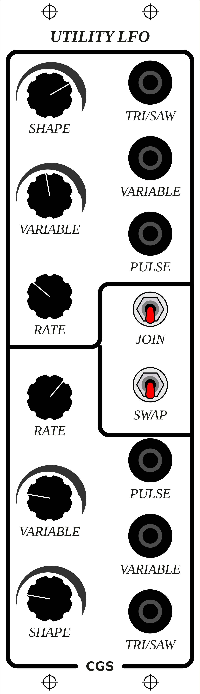 | Utility LFO CGS58 · CGS758 Two LFOs with variable shape (falling ramp through triangle to rising ramp), variable pulse width and a mixed output. | LFO | Ken Stone (CGS) |
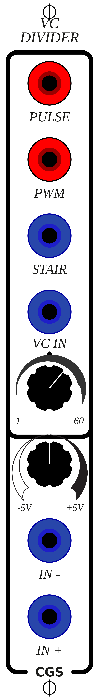 | VC Divider CGS09 · CGS309 A voltage-controlled pulse divider that keeps the incoming pulse width, with a staircase output. | Clock / divider | Ken Stone (CGS) |
 | VC Filter (1973) Paperface Filter · 1973 VCF · CGS77 A two-pole state-variable resonant filter with simultaneous low-pass, band-pass and high-pass outputs. | Filter | Ken Stone (CGS)Prism Circuits |
 | VC Phaser PHA · Phaser · CGS90 Phaser and Audio Mixers A voltage-controlled phase shifter with three phase-shifted outputs and a built-in mix for the classic notched phasing sound. | Effects | Ken Stone (CGS)Low-GainPrism Circuits |
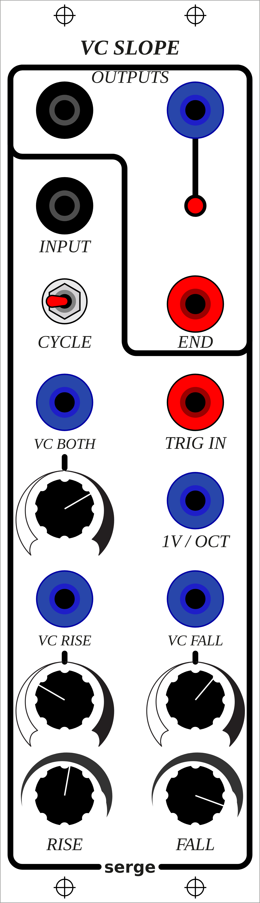 | VC Slope VCS · CGS75 One channel of the Serge slope generator: envelope, slew, LFO, VCO and envelope follower in a single 2" module. | Envelopes / slope | Ken Stone (CGS) |
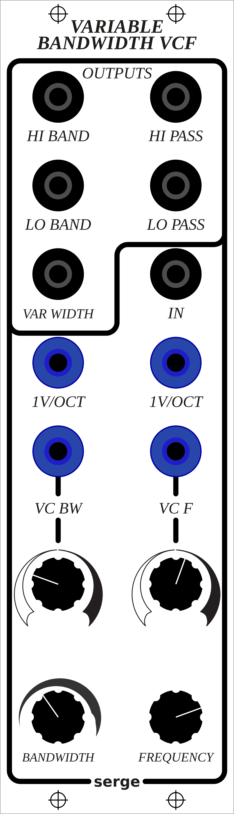 | Variable Bandwidth VCF VCF2 · Bandwidth Filter · LGE110 Two state-variable filters in series, giving high-pass, low-pass, two fixed band-pass and one variable-bandwidth output, all without resonance. | Filter | Low-Gain |
 | Variable Slope VCF VCFS · Slope Filter A two-pole filter whose slope knob moves from a gentle 6 dB/octave through flat to sharp and resonant. | Filter | Low-Gain |
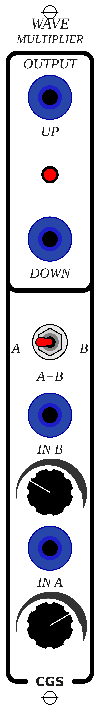 | Wave Multiplier (CGS29) CGS29 · Wave folder A wave folder modelled on the middle section of the Serge Wave Multipliers: folds a signal into harmonically rich shapes. | Waveshaper | Ken Stone (CGS) |
 | Wave Multipliers VCM · CGS113 Three separate voltage-controlled waveshapers that add harmonics to a signal instead of filtering them away. | Timbre / waveshaping | Ken Stone (CGS)Low-Gain |
 | X-Fader X-Fade / Gate · Crossfader A voltage-controlled crossfader between two signals, with a built-in VCA on the result. | Mixing / amplitude | Prism Circuits |
Where to get parts
| Source | What they offer |
|---|---|
| Elby Designs | Sells the PCBs for Ken Stone's CGS designs. |
| Ken Stone (CGS) | Schematics, parts lists, PCB overlays and construction notes for the CGS designs. |
| Prism Circuits | Paperface-style 4U PCBs (Oscillator, 1973 VCF, ASR, Router, X-Fade / Gate, Send Receive, 10-stage Sequencer and more), drilled panels and power. |
| Low-Gain | 4U Serge-format modules (Loudest Warning-style mounting), assembled or as DIY PCBs with BOMs and schematics on each product page. Some boards will not match other panel layouts, or need extra work to fit them. |
Ken Stone's Serge-derived designs may be built for personal use only; Serge Tcherepnin keeps all rights to his circuits. Schematics, parts lists and PCBs belong to their designers and sellers, so these pages link to them rather than copying them.